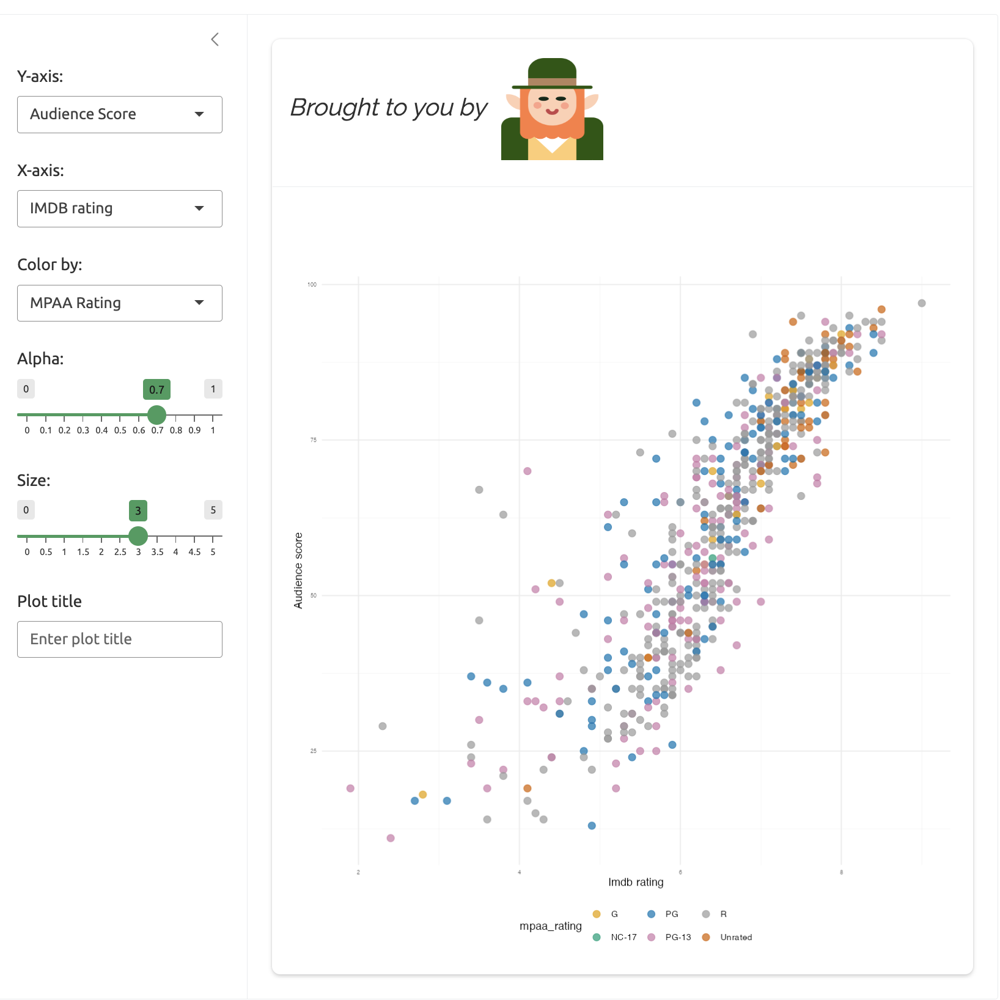

usethis::create_package("lap")The leprechaun framework
leprechaun apps are built much like standard R packages (with devtools and usethis), but they’re designed with the intention of being a ‘leaner and smaller’ version of golem:1
“it generates code and does not make itself a dependency of the application you build; this means applications are leaner, and smaller”
IMPORTANT: Development Environment
This page covers developing a new leprechaun application using Positron, the new IDE from Posit. The current version information is below:
Positron Version: 2025.03.0 (Universal) build 116
Code - OSS Version: 1.96.0
Commit: 7f0f93873e8b24c9f393bb3586724f4783c5e72c
Date: 2025-03-01T18:51:44.014Z
Electron: 32.2.6
Chromium: 128.0.6613.186
Node.js: 20.18.1
V8: 12.8.374.38-electron.0
OS: Darwin x64 24.3.0Getting started
Create a leprechaun app just like you would a new R package:
✔ Creating '../projects/lap/'
✔ Setting active project to '/Users/mjfrigaard/projects/lap'
✔ Creating 'R/'
✔ Writing 'DESCRIPTION'
✔ Writing 'NAMESPACE'
✔ Writing 'lap.Rproj'
✔ Adding '^lap\\.Rproj$' to '.Rbuildignore'
✔ Adding '.Rproj.user' to '.gitignore'
✔ Adding '^\\.Rproj\\.user$' to '.Rbuildignore'
✔ Opening '/Users/mjfrigaard/projects/lap/' in new RStudio sessionAfter the new project opens, install and load the leprechaun package, then run leprechaun::scaffold():2
install.packages("leprechaun")
leprechaun::scaffold()Package files
leprechaun::scaffold() results in the following folder tree:
├── DESCRIPTION
├── NAMESPACE
├── R/
│ ├── _disable_autoload.R
│ ├── assets.R
│ ├── hello.R
│ ├── input-handlers.R
│ ├── leprechaun-utils.R
│ ├── run.R
│ ├── server.R
│ ├── ui.R
│ └── zzz.R
├── inst/
│ ├── assets
│ ├── dev
│ ├── img
│ └── run
│ └── app.R
├── lap.Rproj
└── man
└── hello.Rd
8 directories, 14 filesThe standard R package files and folders (DESCRIPTION, NAMESPACE, R/, etc.) are accompanied by multiple sub-folders in inst/ (recall that inst/ contents are available in the package when the package is installed).3
Getting Started
The following files are part of our initial application created with leprechaun::scaffold().
.leprechaun
The .leprechaun lock file contains the package name, version, as well as versions of bootstrap and accompanying R files.
DESCRIPTION
shiny,bslib,htmltoolsandpkgloadwill automatically be added to theDESCRIPTIONfile- The remaining
DESCRIPTIONfields need to be entered manually (or with thedescpackage). See example below:
- The remaining
Package: lap
Title: leprechaun app-package
Version: 0.0.0.9000
Author: John Smith <John.Smith@email.io> [aut, cre]
Maintainer: John Smith <John.Smith@email.io>
Description: A movie-review leprechaun shiny application.
License: GPL-3
Encoding: UTF-8
Roxygen: list(markdown = TRUE)
LazyData: true
Imports:
bslib,
htmltools,
shiny
Suggests:
pkgloadLeave an empty final line in the DESCRIPTION file.
As promised, leprechaun app-packages can be spun up quickly with minimal commands. After loading and documenting lap, we can use the standalone app function run() to launch the app.
Development
Application code
The application code files are created in the R/ folder:
── Generating code ──
✔ Creating R/ui.R
✔ Creating R/assets.R
✔ Creating R/run.R
✔ Creating R/server.R
✔ Creating R/leprechaun-utils.R
✔ Creating R/_disable_autoload.R
✔ Creating R/zzz.R
✔ Creating R/input-handlers.Rui.Rholds theui()andassets()functions.assets()loads the resources called in theR/assets.Rfile (seeserveAssets()function above).assets.R: contains theserveAssets()function, which will identify the modules using CSS or JavaScript and createdependencies, a list of metadata on the apprun.Rcontains functions for running the production (run()) and development version of the application (run_dev()):server.Rby default createssend_messagewithmake_send_message(session)(seeR/leprechaun-utils.Rabove).leprechaun-utils.Rinitially contains themake_send_message()function (which is used in theR/server.Rbelow)_disable_autoload.Rdisables Shiny’sloadSupport(). By default, Shiny will load “any top-level supporting.Rfiles in theR/directory adjacent to theapp.R/server.R/ui.Rfiles.”zzz.Rcontains.onLoad(), a wrapper forsystem.file()and Shiny’saddResourcePath()and function (used for adding images to the application ininst/img/).input-handlers.R: containsleprechaun_handler_df()andleprechaun_handler_list()for “converting the input received from the WebSocket to a data.frame/list”.onAttach()registers the two input handlers aboveregisterInputHandler(): “When called, Shiny will use the function provided to refine the data passed back from the client (after being deserialized byjsonlite) before making it available in the input variable of theserver.Rfile”)
The initical call to devtools::document() will create documentation for the following files and includes RoxygenNote 7.2.3 in the DESCRIPTION:
ℹ Updating lap documentation
First time using roxygen2. Upgrading automatically...
Setting `RoxygenNote` to "7.2.3"
ℹ Loading lap
Warning: Skipping NAMESPACE
✖ It already exists and was not generated by roxygen2.
Writing serveAssets.Rd
Writing js-modules.Rd
Writing leprechaun_handler_df.Rd
Writing leprechaun_handler_list.Rd
Writing run.Rd
Writing run_dev.Rd
Writing ui.Rd
Writing assets.Rd
Warning: Skipping NAMESPACE
✖ It already exists and was not generated by roxygen2.
Documentation completed- 1
-
The
NAMESPACEfile was initially withexportPattern("^[[:alpha:]]+"). To override this pattern and have the NAMESPACE file generated byroxygen2, delete theNAMESPACEand re-rundevtools::document().
The inst/ folder
The inst/ folder contains the initial leprechaun scaffolding folders and inst/run/app.R file:
✔ Creating inst/dev
✔ Creating inst/assets
✔ Creating inst/img
✔ Creating inst/run/app.RThe
inst/run/app.Rcontains calls toleprechaun::build()andpkgload::load_all()before running the app withrun()show/hide inst/run/app.R
# do not deploy from this file # see leprechaun::add_app_file() leprechaun::build() pkgload::load_all( path = "../../", reset = TRUE, helpers = FALSE ) run()inst/run/app.Ris not run directly. Theleprechaun::add_app_file()will create anapp.Rfile for your app-package.
assets,dev, andimgwill initially contain.gitkeepfiles (a convention used by developers to force Git to include an otherwise empty directory in a repository). Each of these files will be demonstrated in the sections below.
The .leprechaun lock file is also added to the .Rbuildignore
── Ignoring files ──
✔ Adding '^\\.leprechaun$' to '.Rbuildignore'Building leprechaun apps is similar to developing an R package. New code is placed in the R/ folder, and application resources (CSS, SASS, JavaScript files) are added using one of the leprechaun::use_* functions:
More assets can be added using the leprechaun::use_packer() function.
Modules
leprechaun has an add_module() helper function for creating modules:
To create the initial
var_inputmodule we’ll run:leprechaun::add_module("var_input")- This creates
R/module_var_input.Rwith functions for the UI and server portions of the Shiny module:
#' var_input UI #' #' @param id Unique id for module instance. #' #' @keywords internal var_inputUI <- function(id){ ns <- NS(id) tagList( h2("var_input") ) } #' var_input Server #' #' @param id Unique id for module instance. #' #' @keywords internal var_input_server <- function(id){ moduleServer( id, function( input, output, session ){ ns <- session$ns send_message <- make_send_message(session) # your code here } ) } # UI # var_inputUI('id') # server # var_input_server('id')- This creates
Note the send_message <- make_send_message(session) in var_input_server(). We’ll cover how this is used in the JavaScript section below.
Tip:
@keywords internal
The module contents are similar to golem, but instead of using the @noRd tag, these functions include @keywords internal (which can be used to document your package).
The code for the var_input and plot_display modules are below.
- The
R/module_var_input.Rfile:plot_dispaycollects the data fromvar_inputand creates the plot with the customscatter_plot()function:
var_inputUI <- function(id) {
ns <- NS(id)
tagList(
selectInput(
inputId = ns("y"),
label = "Y-axis:",
choices = c(
"IMDB rating" = "imdb_rating",
"IMDB number of votes" = "imdb_num_votes",
"Critics Score" = "critics_score",
"Audience Score" = "audience_score",
"Runtime" = "runtime"
),
selected = "audience_score"
),
selectInput(
inputId = ns("x"),
label = "X-axis:",
choices = c(
"IMDB rating" = "imdb_rating",
"IMDB number of votes" = "imdb_num_votes",
"Critics Score" = "critics_score",
"Audience Score" = "audience_score",
"Runtime" = "runtime"
),
selected = "imdb_rating"
),
selectInput(
inputId = ns("z"),
label = "Color by:",
choices = c(
"Title Type" = "title_type",
"Genre" = "genre",
"MPAA Rating" = "mpaa_rating",
"Critics Rating" = "critics_rating",
"Audience Rating" = "audience_rating"
),
selected = "mpaa_rating"
),
sliderInput(
inputId = ns("alpha"),
label = "Alpha:",
min = 0, max = 1, step = 0.1,
value = 0.5
),
sliderInput(
inputId = ns("size"),
label = "Size:",
min = 0, max = 5,
value = 2
),
textInput(
inputId = ns("plot_title"),
label = "Plot title",
placeholder = "Enter plot title"
)
)
}
var_input_server <- function(id) {
moduleServer(id, function(input, output, session) {
ns <- session$ns
send_message <- make_send_message(session)
# your code here
return(
reactive({
list(
"y" = input$y,
"x" = input$x,
"z" = input$z,
"alpha" = input$alpha,
"size" = input$size,
"plot_title" = input$plot_title
)
})
)
}
)
}- The
R/module_plot_display.Rfile
plot_displayUI <- function(id) {
ns <- NS(id)
tagList(
tags$br(),
tags$blockquote(
tags$em(
tags$h6(
"The code for this application comes from the ",
tags$a("Building web applications with Shiny",
href = "https://rstudio-education.github.io/shiny-course/"
),
"tutorial"
)
)
),
plotOutput(outputId = ns("scatterplot"))
)
}
plot_display_server <- function(id, var_inputs) {
moduleServer(id, function(input, output, session) {
ns <- session$ns
send_message <- make_send_message(session)
inputs <- reactive({
plot_title <- tools::toTitleCase(var_inputs()$plot_title)
list(
x = var_inputs()$x,
y = var_inputs()$y,
z = var_inputs()$z,
alpha = var_inputs()$alpha,
size = var_inputs()$size,
plot_title = plot_title
)
})
output$scatterplot <- renderPlot({
plot <- scatter_plot(
# data --------------------
df = movies,
x_var = inputs()$x,
y_var = inputs()$y,
col_var = inputs()$z,
alpha_var = inputs()$alpha,
size_var = inputs()$size
)
plot +
ggplot2::labs(
title = inputs()$plot_title,
x = stringr::str_replace_all(
tools::toTitleCase(inputs()$x), "_", " "),
y = stringr::str_replace_all(
tools::toTitleCase(inputs()$y), "_", " ")) +
ggplot2::theme_minimal() +
ggplot2::theme(legend.position = "bottom")
})
}
)
}The other components of lap were created using the standard usethis package development functions.
Utility functions
usethis::use_r() was used to create the R/plot_display-utils.R file that holds the scatter_plot() function:
scatter_plot <- function(df, x_var, y_var, col_var, alpha_var, size_var) {
ggplot2::ggplot(data = df,
ggplot2::aes(x = .data[[x_var]],
y = .data[[y_var]],
color = .data[[col_var]])) +
ggplot2::geom_point(alpha = alpha_var, size = size_var)
}After creating the modules and utility function, adding these to the UI (R/ui.R) and server (R/server.R) is straightforward.
UI
The R/ui.R file will contain the fluidPage() layout functions and module UI server functions:
#' Shiny UI
#'
#' Core UI of package.
#'
#' @param req The request object.
#'
#'
#' @keywords internal
ui <- function(req) {
fluidPage(
theme = bslib::bs_theme(version = 5),
assets(),
h1("lap"),
## New code -->
sidebarLayout(
sidebarPanel(
var_inputUI("vars")
),
mainPanel(
# new image
tags$img(
src = "img/leprechaun.jpg",
height = "25%",
width = "25%"),
plot_displayUI("plot")
)
)
## New code <--
)
}Server
The R/server.R file contains the module server functions.
#' Server
#'
#' Core server function.
#'
#' @param input,output Input and output list objects
#' containing said registered inputs and outputs.
#' @param session Shiny session.
#'
#' @noRd
#' @keywords internal
server <- function(input, output, session){
send_message <- make_send_message(session)
## New code -->
selected_vars <- var_input_server("vars")
plot_display_server("plot", var_inputs = selected_vars)
## New code <--
}By default, the R/server.R file contains the make_send_message() function (which will be demonstrated below).4
Data
After calling usethis::use_data_raw('movies'), I can use system.file() to locate the movies.RData file with the following code in data-raw/movies.R:
## code to prepare `movies` dataset goes here
pth <- system.file('extdata/movies.RData', package = 'lap')
load(pth)
usethis::use_data(movies, overwrite = TRUE)Launch
To launch the application in lap with an app.R file, leprechaun has a add_app_file() function. This creates a file similar to inst/run/app.R:
# Launch the ShinyApp
# do not remove to keep push deploy button
# from RStudio
pkgload::load_all(
reset = TRUE,
helpers = FALSE
)
run()Now I can run devtools::load_all(), devtools::document(), restart and load the package, then run()

lap
Unit tests
The unit tests for the scatter_plot() utility function and the module server functions are in the tests/testthat/ folder:
tests
├── testthat
│ ├── test-module_plot_display.R
│ ├── test-module_var_input.R
│ └── test-utils_scatter_plot.R
└── testthat.R
2 directories, 4 filesleprechaun relies on the testthat framework for testing.5 I’ve included the BDD functions (describe() and it()) to make each behavior and test clear.
System tests
System tests can also be included with shinytest2. The examples in lap are similar to those in the golem application.
tests/
├── testthat/
│ ├── _snaps/
│ │ ├── app-feature-01
│ │ └── shinytest2
│ ├── setup-shinytest2.R
│ ├── test-app-feature-01.R
│ └── test-shinytest2.R
└── testthat.R
5 directories, 13 filesAdding files and images
We’ll demonstrate how the inst/ folder works by adding an image to the application. Lets assume I want to add leprechaun.jpg to my UI:
Start by adding the file to
inst/img/:inst/ └── img/ └── leprechaun.jpg <- new image file!Then add the
img/path to the code to UI:tags$img( src = "img/leprechaun.jpg", height = "25%", width = "25%")
Once again, run devtools::load_all() and devtools::document(), restarting and loading the package, then run the application with run():

inst/img/
Adding resources
leprechaun stores external code files the inst/ folder (similar to the golem framework), but uses a combination of use_* and build() functions to add functionality to you app.
Using packer
To demonstrate how packer and leprechaun work together, we’ll walk through the JavaScript example from the package website step-by-step:
First we have to build the scaffolding for packer by running packer::scaffold_leprechaun():
packer::scaffold_leprechaun()packer::scaffold_leprechaun()initializes thenpmpackage manager for JavaScript, installswebpack, and adds the necessary JavaScript files and folders:── Scaffolding leprechaun ───────────────────────────────────────── ✔ Initialiased npm ✔ webpack, webpack-cli, webpack-merge installed with scope "dev" ✔ Added npm scripts ✔ Created srcjs directory ✔ Created srcjs/config directory ✔ Created webpack config files ── Adding files to .gitignore and .Rbuildignore ── ✔ Setting active project to "/Users/mjfrigaard/projects/dev/lap". ✔ Adding "^srcjs$" to .Rbuildignore. ✔ Adding "^node_modules$" to .Rbuildignore. ✔ Adding "^package\\.json$" to .Rbuildignore. ✔ Adding "^package-lock\\.json$" to .Rbuildignore. ✔ Adding "^webpack\\.dev\\.js$" to .Rbuildignore. ✔ Adding "^webpack\\.prod\\.js$" to .Rbuildignore. ✔ Adding "^webpack\\.common\\.js$" to .Rbuildignore. ✔ Adding "node_modules" to .gitignore. ── Scaffold built ── ℹ Run `bundle` to build the JavaScript files ℹ Run `leprechaun::use_packer()`- The following files and folders will be added to the lap root folder:
show/hide packer::scaffold_leprechaun() files
├── node_modules/ │ ├── @discoveryjs │ ├── @jridgewell │ ├── @types │ ├── @webassemblyjs │ ├── @webpack-cli │ ├── @xtuc │ ├── acorn │ ├── acorn-import-assertions │ ├── ajv │ ├── ajv-keywords │ ├── browserslist │ ├── buffer-from │ ├── caniuse-lite │ ├── chrome-trace-event │ ├── clone-deep │ ├── colorette │ ├── commander │ ├── cross-spawn │ ├── electron-to-chromium │ ├── enhanced-resolve │ ├── envinfo │ ├── es-module-lexer │ ├── escalade │ ├── eslint-scope │ ├── esrecurse │ ├── estraverse │ ├── events │ ├── fast-deep-equal │ ├── fast-json-stable-stringify │ ├── fastest-levenshtein │ ├── find-up │ ├── flat │ ├── function-bind │ ├── glob-to-regexp │ ├── graceful-fs │ ├── has-flag │ ├── hasown │ ├── import-local │ ├── interpret │ ├── is-core-module │ ├── is-plain-object │ ├── isexe │ ├── isobject │ ├── jest-worker │ ├── json-parse-even-better-errors │ ├── json-schema-traverse │ ├── kind-of │ ├── loader-runner │ ├── locate-path │ ├── merge-stream │ ├── mime-db │ ├── mime-types │ ├── neo-async │ ├── node-releases │ ├── p-limit │ ├── p-locate │ ├── p-try │ ├── path-exists │ ├── path-key │ ├── path-parse │ ├── picocolors │ ├── pkg-dir │ ├── punycode │ ├── randombytes │ ├── rechoir │ ├── resolve │ ├── resolve-cwd │ ├── resolve-from │ ├── safe-buffer │ ├── schema-utils │ ├── serialize-javascript │ ├── shallow-clone │ ├── shebang-command │ ├── shebang-regex │ ├── source-map │ ├── source-map-support │ ├── supports-color │ ├── supports-preserve-symlinks-flag │ ├── tapable │ ├── terser │ ├── terser-webpack-plugin │ ├── undici-types │ ├── update-browserslist-db │ ├── uri-js │ ├── watchpack │ ├── webpack │ ├── webpack-cli │ ├── webpack-merge │ ├── webpack-sources │ ├── which │ └── wildcard ├── package-lock.json ├── package.json ├── srcjs/ │ ├── config │ ├── index.js │ └── modules ├── webpack.common.js ├── webpack.dev.js └── webpack.prod.js 106 directories, 36 files
Now that the scaffolding is in place, run leprechaun::use_packer():
leprechaun::use_packer()leprechaun::use_packer()creates theinst/dev/packer.Rand addspackerto theDESCRIPTION. Theinst/dev/packer.Rfile contains the following:#' Bundle for Prod #' #' Bundles packer using packer. packer_bundle <- function(){ has_packer <- requireNamespace("packer", quietly = TRUE) if (!has_packer) { warning( "Requires `packer` package: `install.packages('packer')`\n", "Skipping.", call. = FALSE ) return() } packer::bundle() } packer_bundle()
The final step is to build or ‘bundle’ the JavaScript files with leprechaun::build()
leprechaun::build()leprechaun::build()runs the contents ofinst/dev/packer.Rto bundle the JavaScript code:✔ Running packer.R ✔ Bundled
Lets review the new files that have been added to the lap:
In the
inst/dev/folder, thepacker.Rfile has been added, which callspacker::bundle()inst/dev/ └── packer.R 1 directory, 1 fileIn the
srcjs/folder, themodules/message.jsandindex.jscreate the alert withShiny.addCustomMessageHandlersrcjs/ ├── config │ ├── entry_points.json │ ├── externals.json │ ├── loaders.json │ ├── misc.json │ └── output_path.json ├── index.js └── modules └── message.js// srcjs/modules/message.js export const message = (msg) => { alert(msg); } // srcjs/index.js import { message } from './modules/message.js'; import 'shiny'; // In shiny server use: // session$sendCustomMessage('show-packer', 'hello packer!') Shiny.addCustomMessageHandler('show-packer', (msg) => { message(msg.text); })
To use the JS message scripts in srcjs/, I add the following to R/server.R:
send_message <- make_send_message(session)
send_message("show-packer",
text = "this message is from your R/server.R file")After running devtools::load_all() and devtools::document(), the application loads with an alert:

send_message() from R/server.R
send_message()
We can also include messages from modules.
- In
R/module_plot_display.R
send_message <- make_send_message(session)
send_message("show-packer",
text = "this is a message from your plot_display module")Read more about sending JavaScript messages here on the shiny website.
Using Sass
We can add Sass styling to our leprechaun app using the use_sass() helper function (this Sass example is from the package website).
- Run
leprechaun::use_sass():
leprechaun::use_sass()- This will add files to
assets/anddev/and we see the following messages:
✔ Creating scss
✔ Creating inst/dev/sass.R
✔ Adding 'sass' to Suggests in DESCRIPTION
✔ Adding '^scss$' to '.Rbuildignore'
! This requires `leprechaun::build()` or the `leprechaun::build_roclet`- Below are the new files in
scss/:
scss
├── _core.scss
└── main.scss
1 directory, 2 filesThe scss/ folder created by leprechaun::use_sass() includes _core.scss and main.scss.
_core.scss: the original file is below
html{
.error {
color: red
}
}- We’ll change the
color:fromredto green (#38B44A) using$accent: #38B44A;
$accent: #38B44A;
html{
h1 {
color: $accent;
}
}- Then run
leprechaun::build()
leprechaun::build()✔ Running packer.R
✔ Bundled
✔ Running sass.RThe
inst/dev/sass.Rfile contains asass_build()functionsass_build()looks in thescss/folder formain.scssand creates theinst/assets/style.min.cssfile.
#' Build CSS #' #' Build the sass sass_build <- function() { has_sass <- requireNamespace("sass", quietly = TRUE) if (!has_sass) { warning( "Requires `sass` package: `install.packages('sass')`\n", "Skipping.", call. = FALSE ) return() } output <- sass::sass( sass::sass_file( "scss/main.scss" ), cache = NULL, options = sass::sass_options( output_style = "compressed" ), output = "inst/assets/style.min.css" ) invisible(output) } sass_build()
Once again, I run devtools::load_all(), devtools::document(), install and restart, then load the package and run()

lap with new Sass
leprechaun::build()
The assets/ folder contains the files generated by the .R scripts in the dev/ folder.
“Do not call this function from within the app. It helps build things, not run them.” -
build.mdguide
Contents of
inst/assets/:inst/assets/ ├── index.js └── style.min.css 1 directory, 2 filesContents of
inst/dev/:inst/dev/ ├── packer.R └── sass.R 1 directory, 2 filesinst/dev/sass.Rcreatesinst/assets/style.min.cssandinst/dev/packer.Rcreatesinst/assets/index.js
serveAssets()
After running leprechaun::use_sass() and leprechaun::build(), we’ll check the serveAssets() function:
lap:::serveAssets()[[1]]
List of 10
$ name : chr "lap"
$ version : chr "0.0.0.9000"
$ src :List of 1
..$ file: chr "."
$ meta : NULL
$ script : Named chr "assets/index.js"
..- attr(*, "names")= chr "file"
$ stylesheet: Named chr [1:2] "assets/style.min.css" "html/R.css"
..- attr(*, "names")= chr [1:2] "file" "file"
$ head : NULL
$ attachment: NULL
$ package : chr "lap"
$ all_files : logi TRUE
- attr(*, "class")= chr "html_dependency"This shows that stylesheet has been updated with "assets/style.min.css" and script has been updated with "assets/index.js" (these files are loaded into the application when it runs).
Configure
leprechaun app configuration files use the config package (similar to golem). leprechaun doesn’t assume I’ll be using a config.yml file, but we can easily add one with leprechaun::use_config().
use_config()adds ainst/config.ymlandR/config.RThe default value in the
config.ymlfiles isproduction: true, which can be read usingconfig_read()inR/config.R.config_read()$production [1] TRUE- Values can be added to
inst/config.ymlusing the config file format, then theCONFIG_FILEcan be set as an environmental variable
- Values can be added to
Dependencies
lap depends on shiny, but not leprechaun.
pak::local_dev_deps_explain(
deps = "shiny",
root = "_apps/lap")
lap -> shiny
lap -> shinytest2 -> shinypak::local_dev_deps_explain(
deps = "leprechaun",
root = "_apps/lap")
x leprechaunHowever, adding functionality and features with packer and the use_* functions can add dependencies to your leprechaun app:
pak::local_dev_deps_explain(
deps = "packer",
root = "_apps/lap")
lap -> packerpak::local_dev_deps_explain(
deps = "sass",
root = "_apps/lap")
lap -> bslib -> sass
lap -> shiny -> bslib -> sass
lap -> packer -> htmlwidgets -> rmarkdown -> bslib -> sass
lap -> sass
lap -> shinytest2 -> rmarkdown -> bslib -> sass
lap -> shinytest2 -> shiny -> bslib -> sassThe final folder tree for lap (a leprechaun app-package) is below.
├── DESCRIPTION
├── NAMESPACE
├── R/
│ ├── _disable_autoload.R
│ ├── assets.R
│ ├── config.R
│ ├── endpoint-utils.R
│ ├── html-utils.R
│ ├── input-handlers.R
│ ├── leprechaun-utils.R
│ ├── module_plot_display.R
│ ├── module_var_input.R
│ ├── run.R
│ ├── server.R
│ ├── ui.R
│ ├── utils-js.R
│ ├── utils_scatter_plot.R
│ └── zzz.R
├── README.md
├── app.R
├── data/
│ └── movies.rda
├── data-raw/
│ └── movies.R
├── inst/
│ ├── assets
│ ├── config.yml
│ ├── dev
│ ├── extdata
│ ├── img
│ └── run
├── lap.Rproj
├── node_modules/
├── package-lock.json
├── package.json
├── scss/
│ ├── _core.scss
│ └── main.scss
├── srcjs/
│ ├── config
│ ├── index.js
│ ├── leprechaun-utils.js
│ └── modules
├── tests/
│ ├── testthat
│ └── testthat.R
├── webpack.common.js
├── webpack.dev.js
└── webpack.prod.js
109 directories, 63 files- 1
-
leprechaunapps are packages, so theinst/folders are available to the application at runtime. - 2
-
Files and folders created with
packer::scaffold_leprechaun()
The output from system.file(".", package = "lap") has been passed to fs::dir_tree() below:
├── DESCRIPTION
├── INDEX
├── Meta/
│ ├── Rd.rds
│ ├── data.rds
│ ├── features.rds
│ ├── hsearch.rds
│ ├── links.rds
│ ├── nsInfo.rds
│ └── package.rds
├── NAMESPACE
├── R/
│ ├── lap
│ ├── lap.rdb
│ └── lap.rdx
├── assets/
│ ├── index.js
│ └── style.min.css
├── data/
│ ├── Rdata.rdb
│ ├── Rdata.rds
│ └── Rdata.rdx
├── dev/
│ ├── packer.R
│ └── sass.R
├── extdata/
│ └── movies.RData
├── help/
│ ├── AnIndex
│ ├── aliases.rds
│ ├── lap.rdb
│ ├── lap.rdx
│ └── paths.rds
├── html/
│ ├── 00Index.html
│ └── R.css
├── img/
│ └── leprechaun.jpg
└── run/
└── app.RAs we can see, the files and folders created with packer::scaffold_leprechaun() won’t be installed with the source code.
Recap
leprechaun delivers on its promise to be a ‘leaner and smaller’ version of golem. Most of the features in golem are also accessible in leprechaun:
Adding modules:
leprechaun’sadd_module()function doesn’t have the consistent naming or prefixes found ingolem::add_module(), but still reduces a lot of typing if you are creating these files manually.Adding functions: leprechaun relies on
usethis::use_r()for adding new functionality to your applicationleprechaundoesn’t come with any testing functions, although this can be done usingtestthatandshinytest2(just as we would with a standard R package).
Multiple inst/ sub-folders makes adding assets to the application easier, and leprechaun has a long list of use_* functions for including Sass, CSS, HTML, and JavaScript. The package website has examples for getting started and adding multiple resources, but unfortunately the function reference had limited documentation.
Below is an overview of the features/functions in the leprechaun framework:
| Feature | Arguments/Options | Description/Comments |
|---|---|---|
scaffold() |
|
The initial ‘setup’ function that builds the leprechaun files in R/ and inst/ |
scaffold_leprechaun() (from packer) |
|
This function comes from the This creates the following non-standard R package folders and files:
These non-standard folders are added to the |
use_packer() |
Assumes scaffold_leprechaun() from packer has been run |
Sets up application to use
|
build() |
Returns TRUE/FALSE if build was successful. |
Used to ‘bundle’ various resources (i.e., from packer and the other use_ functions) |
use_sass() |
Creates Adds |
|
use_html_utils() |
Adds R/html-utils.R |
Adds
|
use_endpoints_utils() |
Adds R/endpoint-utils.R |
Adds
|
use_js_utils() |
Adds Adds import statement to |
Requires running leprechaun::build() to bundle .js |
use_config() |
Adds
|
Adds
|
add_module() |
Using
|
It would be nice if the modules had consistent naming (the UI function uses By default, modules aren’t exported (i.e., with Each module automatically includes:
|
add_app_file() |
Adds Includes call to |
Handy for quickly launching the app during development (and deployment). |
.onLoad() |
Used to add external files to app (images, html, etc.) | Combines Shiny’s addResourcePath() and system.file(). |
serveAssets() |
modules argument can be used to include JavaScript modules |
Adds dependencies for JavaScript, CSS, and HTML. |
Footnotes
The
leprechaun::scaffold()defaults to anavbarPage(), but you can switch to afluidPage()or change the Bootstrap version (“If shiny > 1.6 is installed defaults to version 5, otherwise version 4” ).↩︎We can remove
R/hello.Randman/hello.Rdfiles. These are just examples fromusethis::create_package().↩︎Note the
R/server.Rfunction is not exported from the package by default (i.e., the@noRdtag is included with@keywords internal).↩︎testthatcan be used for testing utility functions and module functions (as shown here).↩︎